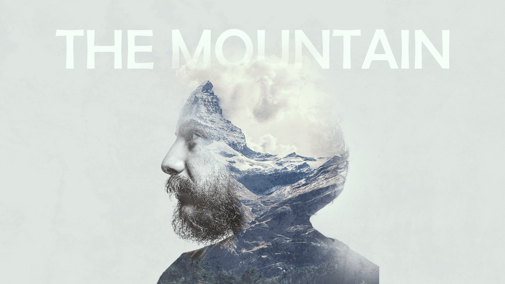
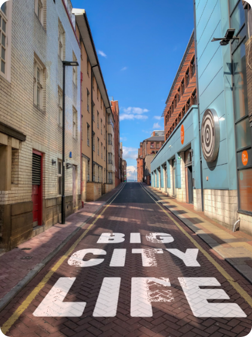
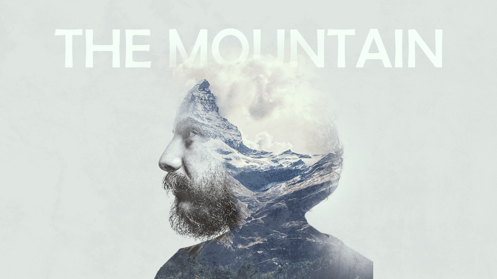
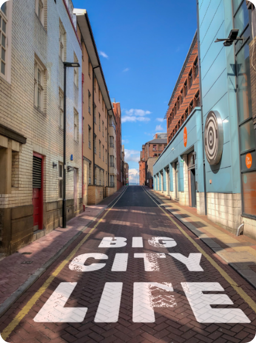

Talen
- Nederlands
- Engels
 





De afgelopen twee weken hebben we enkele bedrijfssprekers over de vloer gehad die werken binnen de sector waar onze richting op is gefocust. Het gaat hierbij over de bedrijven Made, Wieni en Nascom. Zij kwamen vertellen hoe hun bedrijf precies in elkaar zit, hoe zij werken en wat zij precies doen. Ook werden er enkele goede vragen gesteld na afloop van deze presentaties. Ik ga jullie dan ook wat meer vertellen over deze bedrijven, wat ze doen, en even overlopen welke vragen er waren en het antwoord hierop. Ik ga jullie in dit bestand dan ook vertellen wat ik heb bijgeleerd van deze sprekers en de vragen die ik mij stelde die tijdens deze sessies beantwoord werden.
Ik vroeg me natuurlijk af wat dat zij als bedrijf deden. Zij zijn dus een digitaal innovatiebureau dat is opgericht in 2006. Dit betekent dat zij nadenken over het ontwerpen van innovatievere producten bijvoorbeeld het maken van design afdekplaten voor stopcontacten met de overschot van marmeren keukenbladen. Ook was een zeer grote vraag voor mij waarom er zoveel openstaande jobs waren bij hun bedrijf. Dit kwam volgens hun gewoon door het tekort aan geschoolde mensen binnen deze richting, wat ik dus wel zie als een heel groot voordeel voor ons, de studenten. De job die mij het meeste aansprak binnen de vele openstaande jobs is toch wel UX/UI designer omdat ik hier op school ook heel geïnteresseerd in ben en het wel zou zien zitten om dit in mijn latere leven ook nog verder te kunnen zetten. Ook vond ik de samenwerkingen die zij hadden met andere bedrijven leuk waren omdat dit allemaal leuke bedrijven zijn zoals bv Polyvision. Aan deze samenwerkingen zie je ook dat het een heel innovatief en vooruitdenkend bedrijf is waar dus nog heel veel toekomst in zit. Dit zie ik dus wel als een bedrijf waar ik wel graag in zou willen werken maar er zijn nog twee andere bedrijven die deze keuze misschien wel kunnen beïnvloeden.
Eén van die bedrijven, die als tweede kwam spreken bij ons op school, is Wieni. Dit is een bedrijf dat al vroeg begonnen is binnen deze sector doordat twee kotvrienden in hun studentenleven in de richting informatiemanagement samen begonnen zijn met dit kleinschalige bedrijfje dat nu uitgegroeid is tot een groot, professioneel bedrijf. Ze zijn hier dan ook me begonnen in 1994 en houden zich vooral bezig in de richting van development en design van websites en apps voor grote bedrijven. Ook hier is een goede weekplanning met veel activiteiten die het team dichter bij elkaar brengen en dit is voor mij een zeer groot voordeel op de werkvloer omdat je weet dat je op elkaar kan bouwen. Er word ook gebruik gemaakt van Gitlab, een site/programma waar hun “issue list” op staat zodat dit snel en gemakkelijk kan worden opgelost. Ik had niet heel veel vragen voorbereid over dit bedrijf omdat ik het toch wel allemaal goed begreep wat zij precies deden en de presentatie versterkte dit nog eens extra. Het enige wat ik mij afvroeg is wat het grootste bedrijf is waar zij mee gewerkt hebben. Dit werd opnieuw in de presentatie duidelijk en ik zag onmiddellijk dat zij al met redelijk grote bedrijven zoals UZ Leuven en GoPlay hebben samengewerkt dus dit is opnieuw een zeer gekend bedrijf met een goede kijk op de toekomst.
Als laatste spreker kwam het bedrijf Nascom langs dat valt onder de groep van Make It Fly. Een
bedrijvengroep over heel België waaronder verschillende kleinere vestigingen van bedrijven
vallen.
Ook een heel interessant concept aangezien je dan veel contacten kan creëren binnen deze
industrie om zo eventueel later door te groeien binnen één van deze bedrijven.Bij hun gaat het
vooral rond het ontwikkelen van design, ontwikkeling en onderhoud van platformen van bv het
Sint-Trudo ziekenhuis of toerisme Oost-Vlaanderen hun websites.
Ook is er duidelijke communicatie binnen het bedrijf rond alles: opmerkingen op projecten durven
uiten, durven vragen als je iets nodig hebt zoals bv een specifiek programma. Dit is voor mij
ook zeer belangrijk aangezien ik iemand ben die soms veel ondersteuning nodig heeft en er dus
niet van houd als er geen duidelijke communicatie is. Iets wat mij ook aanstaat maar toch merk
dat dit in meerdere bedrijven terugkomt is dat ze zeer gefocust zijn op klantvriendelijkheid
maar ook heel erg op het goed behandelen van het personeel door te zorgen voor een unieke
werkplek, organiseren van fun events, evaluaties en feedback,…
Als laatste viel het me ook op dat zij, al van voor corona, werken met 50/50 home office. In het
begin dacht ik “Oei dat zie ik niet echt zitten” maar toen ze dit hadden uitgelegd waarom en hoe
ze dit precies deden was ik toch wel overtuigd door dit concept.
Ze werken namelijk van thuis uit op de momenten dat je bijvoorbeeld een website moet coderen of
een designschets moet afmaken zodat, van het moment dat je terug op kantoor komt dit kan
bespreken en niet hoeft te wachten op anderen omdat je tegenwoordig alles ook online kan
communiceren indien nodig.
Deze bedrijven hebben mij dan ook extra gestimuleerd om in deze sector te willen werken, niet alleen door de mooie auto enzovoort, maar ook door de manier van denken binnen dit soort bedrijven. Ik zou dan misschien nog wel het liefst bij Made willen werken omdat ik vind dat zij de meeste creatieve projecten hebben van de drie bedrijven en er dus heel veel creativiteit gebruikt word, wat ik zeker wel nodig heb binnen een job. Ik hoop ook in de toekomst dat ik misschien bij één van deze interessante bedrijven aan de slag kan of stage kan doen binnen mijn opleiding.
/
Ik kwam hier aan in de eerste lesweek zonder enige ervaring in dit vak. Toch was de interesse groot maar ik had toch een beetje schrik over hoe dit hele systeem nu precies in elkaar zat. Ik merkte wel onmiddellijk dat de leerkracht redelijk streng optreed qua deadlines maar dit heeft ze heel duidelijk op het begin duidelijk gemaakt op een correcte manier. Ondanks dit merk ik wel aan haar manier van lesgeven dat ze het heel goed bedoeld en dit niet doet om vervelend te doen tegen de studenten. Zo heb ik alleen maar meer zin gekregen om dit vak te leren.
We zijn in het begin van het jaar gestart met werkplekleren en hebben binnen dit vak verschillende opdrachten en lessen gevolgd om bij te leren. Dit ging van lezingen tot groepswerken en nog veel meer. Daarnaast moesten we natuurlijk ook een portfolio maken en dit gebeurde in enkele stappen. We begonnen met ruwe schetsen en wireframes uit te werken om tot een idee te komen hoe het eruit zou moeten zien wat betreft de structuur van je portfolio. Daarna hebben we dit uitgewerkt tot een visueel design waar we nu een gecodeerde werkende website van moeten maken.
Allereerst wil ik kijken wat ik allemaal heb geleerd binnen werkplekleren. Je kan natuurlijk op verschillende manieren leren. Op organisatorisch vlak merk ik dat ik het beste werk met de weken van de afgesproken deadlines. Dit betekent dat ik telkens in het begin van de week aan de opdracht begin en dan zorg dat deze zo snel mogelijk klaar is voor de deadline om zo tijdsdruk te voorkomen. Dit sluit aan bij de manier van werken binnen mijn groep van werkplekleren. Hier was de deadline van de in te dienen opdrachten telkens op zondag dus begonnen we altijd aan deze opdrachten op de maandag in het begin van die week. Deze methode vind ik bij mezelf ook heel sterk terug. Op persoonlijk vlak zie ik dan wel dat ik zelf zekerder ben geworden over de dingen die ik doe en maak. In het begin van werkplekleren had ik als zwakte onzekerheid opgegeven omdat ik altijd bevestiging nodig had of ik dit wel goed had gedaan en of er niks fout was. Sinds dat ik in werkplekleren steeds meer zelfstandig goede resultaten afleverde kreeg ik meer zekerheid in hoe ik werk en wat ik inlever. Dit is voor mij ook zeer motiverend om taken en testen af te leggen zonder te twijfelen aan mezelf. Hieruit leer ik dat ik niet onzeker moet zijn over mijn werk en gewoon mijn ding moet doen. Ook versterkt mijn eigenschap dat ik met iedereen kan samenwerken door deze groepswerken binnen werkplekleren 1. Naast deze twee hebben we natuurlijk heel wat technische skills bijgeleerd binnen werkplekleren 1. Er zijn een aantal programma’s die we hiervoor hebben gebruikt om uit te werken en één hiervan is Miro. Dit heb ik al eens eerder gebruikt maar heel beknopt waardoor ik niet al het beste uit de website kon halen maar dit heb ik ook allemaal bijgeleerd binnen de lessen. Ook mijn kennis rond Adobe XD is hierdoor sterk gegroeid door het maken van visual designs en wireframes voor je portfolio en het designen van het dashboard binnen mijn groep. Binnen WebStorm heb ik niet heel veel bijgeleerd aangezien we alles bij de lessen Web Essentials hebben geleerd en dit moesten toepassen op de laatste opdracht, het coderen van de portfolio. Ook merkte ik dat ik heel veel heb bijgeleerd op dit vlak tijdens de seminaries van de verschillende gastsprekers. Dit zijn natuurlijk mensen uit het werkveld, met andere woorden dus mensen die weten hoe het bedrijfsleven binnen deze sector in elkaar zit en wat hiervan te verwachten valt. Zo heb ik ook een beter beeld gekregen op de toekomst en hoe het er voor mij misschien binnen 2 jaar uit zal zien. Hierbij viel mij vooral op dat zij allemaal op ongeveer dezelfde manier werken op een aangename manier. Daarnaast ben ik zelf ook beginnen groeien. Zo zag ik dat mijn creativiteit vaak goed van pas kwam om de verschillende designs net dat beetje meer interessant te maken door kleine toevoegingen en ik hoop dit ook te kunnen toepassen in de lessen van Werkplekleren 2. Ook het feit dat ik goed kan samenwerken werd sterk uitgedrukt tijdens het groepswerk. Ik ben iemand die graag op tijd alles af heeft, ruim voor de deadline. Daarom zorgde ik er ook voor dat er genoeg gecommuniceerd werd binnen de groep zodat alles goed verliep en zo snel mogelijk geüpload kon worden. De verschillende soft en hard skills speelden binnen dit vak ook een zeer grote rol. Als hard skills had ik er niet veel die binnen deze richting van pas kwamen maar door interesse in de richting kwamen deze er snel. Zo heb ik redelijk snel met Adobe XD, Photoshop, Illustrator,… leren werken en deze kwamen goed van pas. Toch merk ik dat ik binnen deze programma’s maar beperkte skills heb die ik zeker nog wil uitbreiden. Hierbij spreek ik vooral over Photoshop, Illustrator en Webstorm (html en css). In Adobe XD heb ik redelijk snel alle tools geleerd die nodig waren om mooie designs en wireframes te maken. Uiteraard wil ik binnen elk programma mijn skills nog uitbreiden om zo in het latere leven super gemakkelijk overweg kan met al deze software. En natuurlijk wil ik bij mijn hard skills ook ervaring op doen maar dit is pas voor in het werkveld aangezien bedrijven de opleiding niet als ervaring zien. De soft skills zou ik zeker op vlak van zelfstandig werken ook zeker willen uitbreiden zoals eerder vermeld. Maar ook op een manier waar ik mezelf soms meer motiveer om aan dingen die ik niet zo graag doe ook eerder te beginnen en dit niet te laten liggen. Wat ik ook opmerkte is dat er binnen de IT-sector heel veel in het Engels word gewerkt en dit is dan ook zeker een soft skill die ik nog wat extra wil bijschaven. Dit wil niet zeggen dat ik geen Engels kan maar er is natuurlijk altijd plaats voor verbetering.
Uit deze lessen werkplekleren kan ik dus afleiden dat ik als persoon wel echt sterk gegroeid ben en hier meer uit geleerd heb dan ik had verwacht omdat ik het in het begin een redelijk onnuttig vak vond. Dit was gewoon mijn eerste indruk maar deze is snel veranderd doordat we veel leerzame info kregen. Ook de seminaries hebben me verrast. Ik had al enige ervaring met seminaries door mijn studie van vorig jaar die met expertise uren werkte. Het enige verschil was dat niet altijd over het specifieke werkveld van de richting gingen en dus niet altijd even boeiend waren. Bij Werkplekleren was dit anders. Hier kwamen echt studiegerichte bedrijven langs en deze vertelde dan ook over onderwerpen die ik herkende uit de lessen en dus vond ik het extra interessant om te zien hoe professionals uit het werkveld hierrond denken. Als laatste heb ik mijn skills binnen groepswerken ook sterk kunnen bijschaven en ik zag ook zeker resultaat op het einde van ons werk. Ook de lectoren staan altijd klaar als je een vraag hebt dus je kan altijd wel iemand terecht aangezien ze allemaal de nodige skills hebben om je te helpen met bv. een stukje code waarbij je vastzit tijdens het coderen. Dit komt bij mijn mindere kenmerk van onzeker zijn over mijn werk zeer goed van pas aangezien ik dan regelmatig kan navragen bij hen of ik wel goed bezig zijn. Na een tijd is dit ook in mijn voordeel werken omdat ik zekerder word over de opdrachten/projecten die ik aflever. Deze taak is dan ook de kers op de taart voor dit vak omdat elk aspect er in terugkomt.